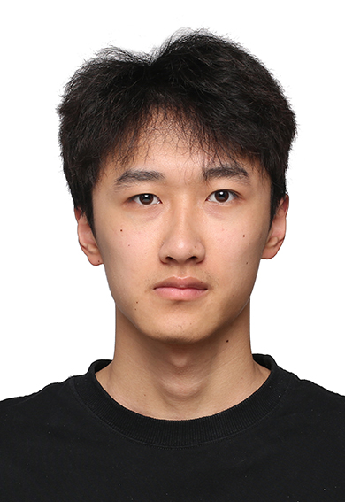

上海大学
材料基因组工程研究院| 计算机科学与技术 |硕士
至

求职意向：AI 应用开发工程师 / 工业软件开发工程师｜上海
上海大学计算机科学与技术硕士（2027 届），具备 AI 应用、工业软件全栈开发与 PLC 工程实践经验。于 ABB/B&R 独立承担振动分析平台 MDoctor 的 Web 化重构与部署交付，覆盖数据采集、信号算法、故障诊断、可视化及工控机部署；以第一作者身份在 npj Computational Materials 发表材料机器学习论文（中科院一区TOP、JCR Q1）。
独立负责工业振动分析平台 MDoctor 的 Web 化重构与部署交付，并负责 PLC 侧诊断程序和数据处理链路的重构维护；参与 MCode 工业 Coding Agent 的测试与领域能力建设，以及 MHelp 工业语音助手的 PLC 数据联调、RAG 召回测试和本地模型测评。
参与工厂自动化生产线升级改造项目，协助完成自动化系统方案设计、PLC 控制程序调试及传感器选型与配置；参与智能仓储系统的现场实施与联调，积累了工业现场环境认知与跨部门协作经验。
基于 PyTorch 独立实现 Phonon Transformer 模型，用于从晶体结构预测声子态密度。在 Transformer 注意力机制中引入原子相对位置/距离编码以捕获晶体几何关系，MAE 较原 SOTA 模型 Mat2Spec 降低 27.6%，将传统 DFT 小时级计算压缩至毫秒级推理。相关成果发表于 npj Computational Materials（第一作者，中科院一区TOP，JCR Q1）。
编程语言：Python, TypeScript, C/C++, Go, Structured Text
机器学习：PyTorch, Transformer, GNN
全栈开发：Vue 3, FastAPI, ECharts, SQLite, REST API
工业与部署：PLC, OPC UA, FTP, Git, Windows/Linux, Docker
AI 工程：RAG, Agent Skill, MCP, Coding Agent